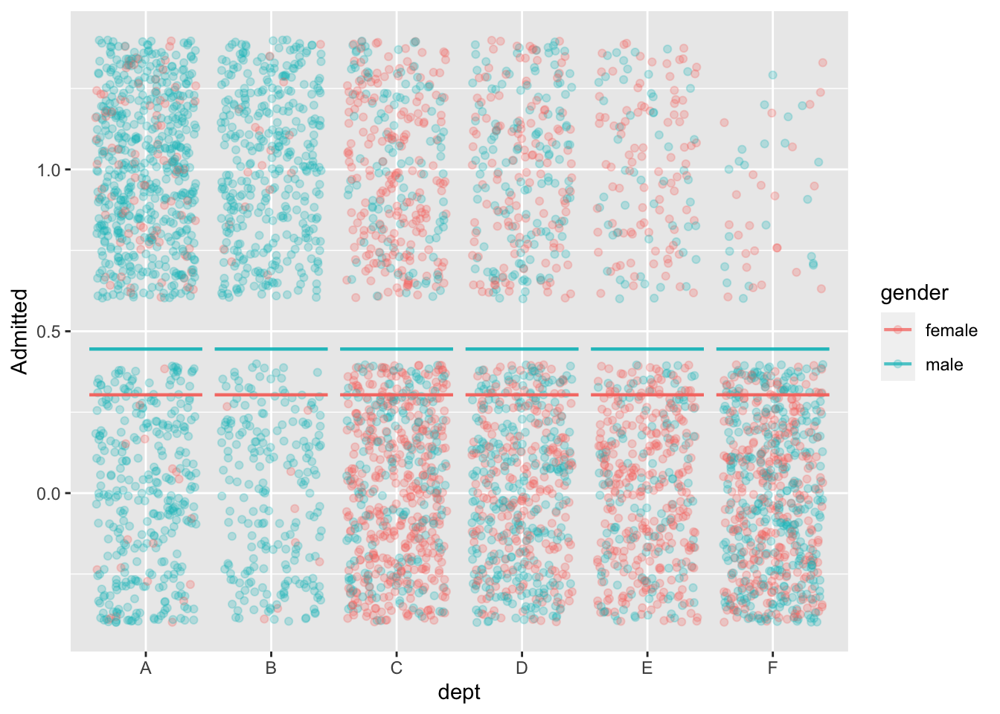
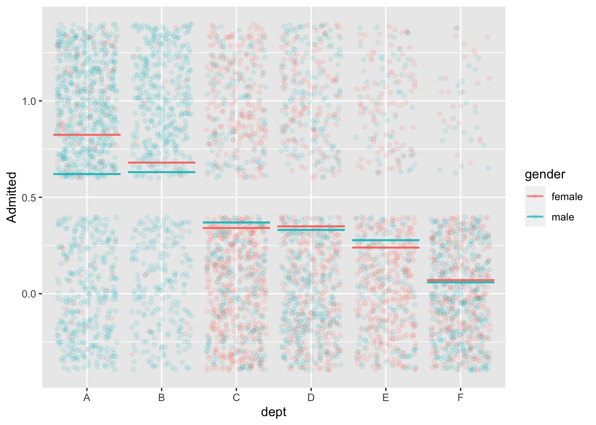
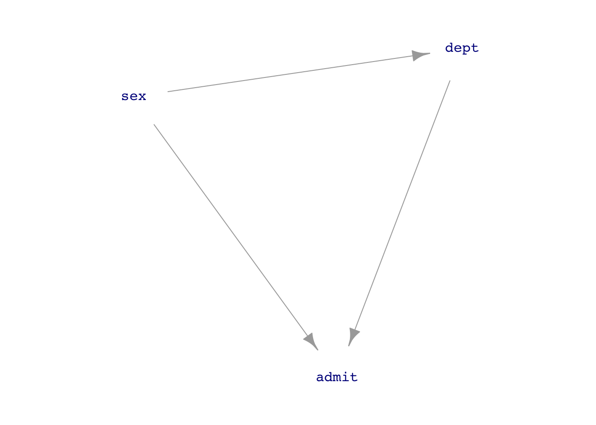
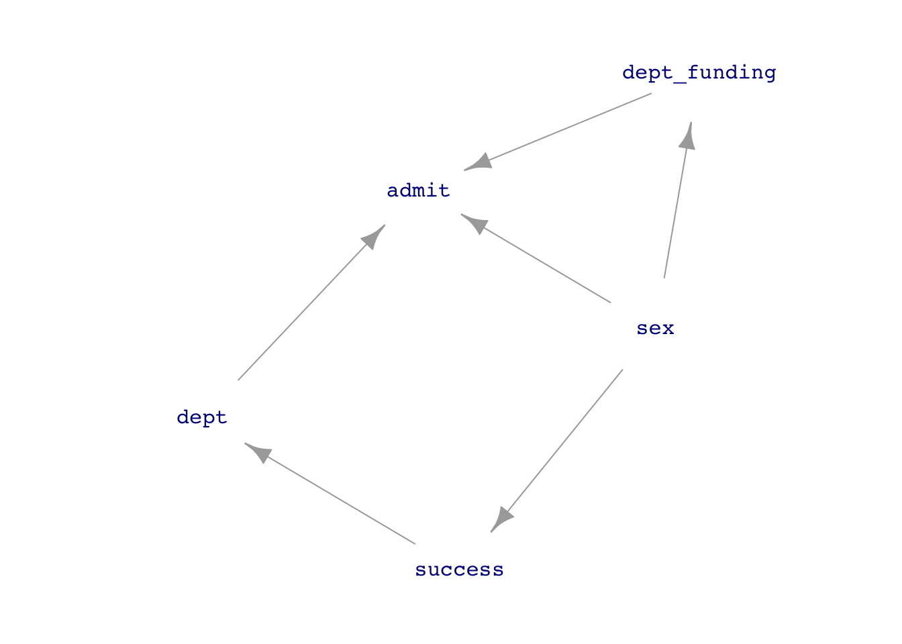
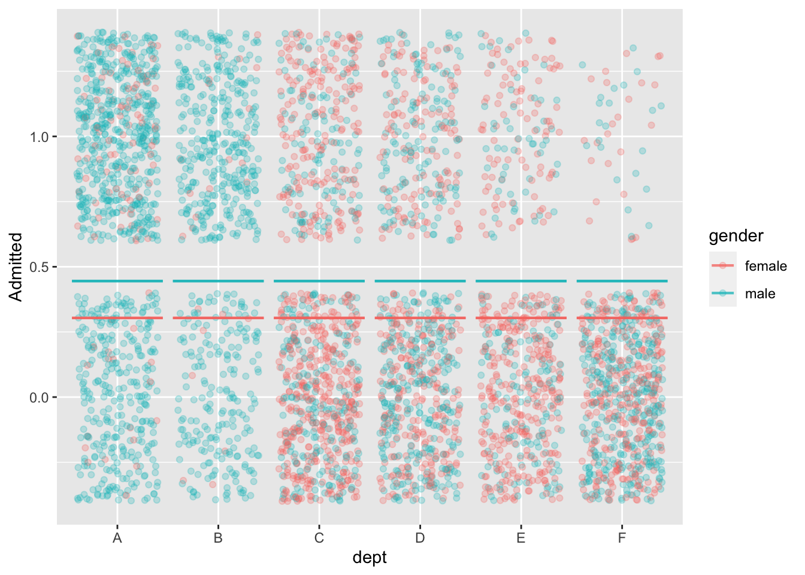
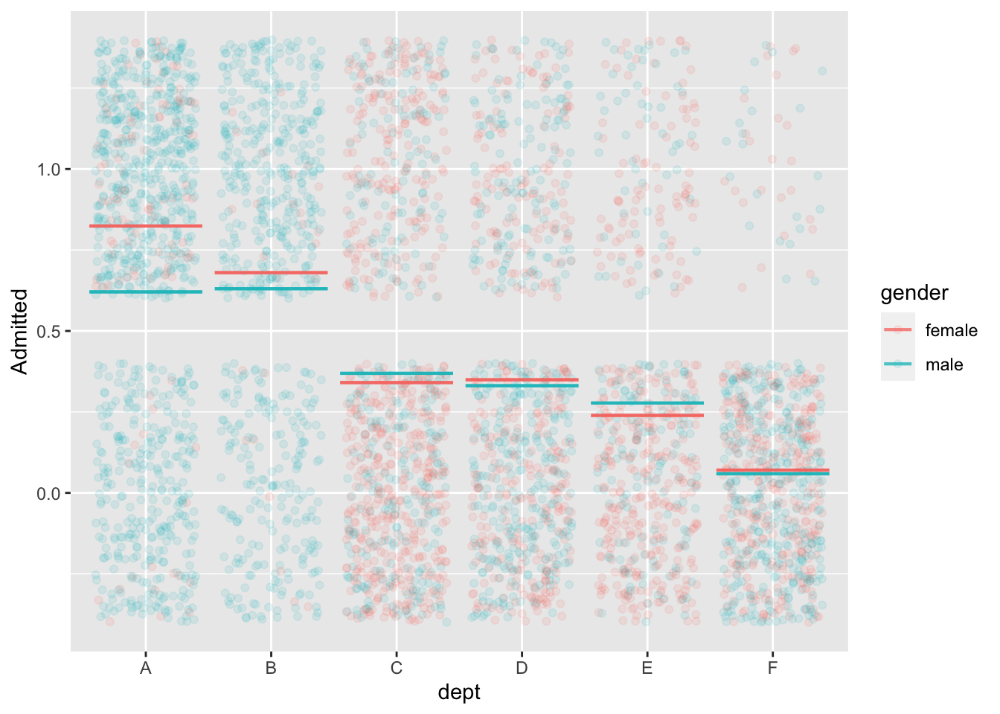
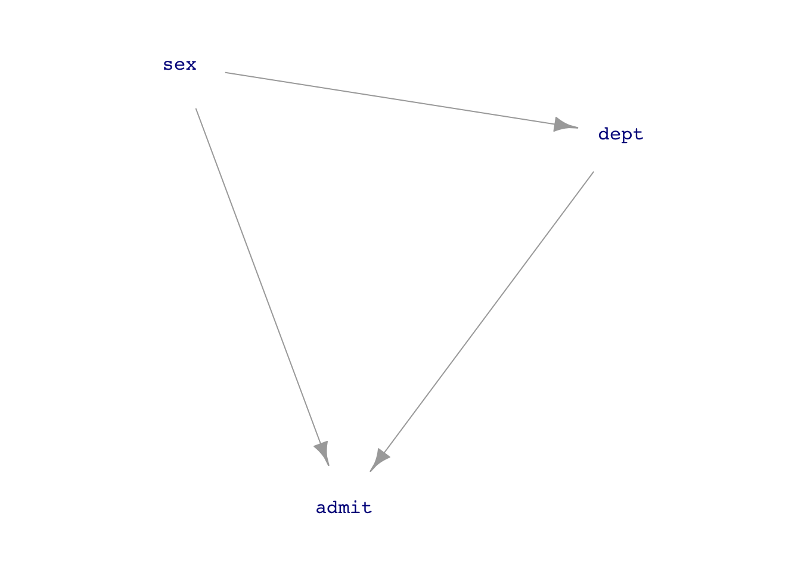
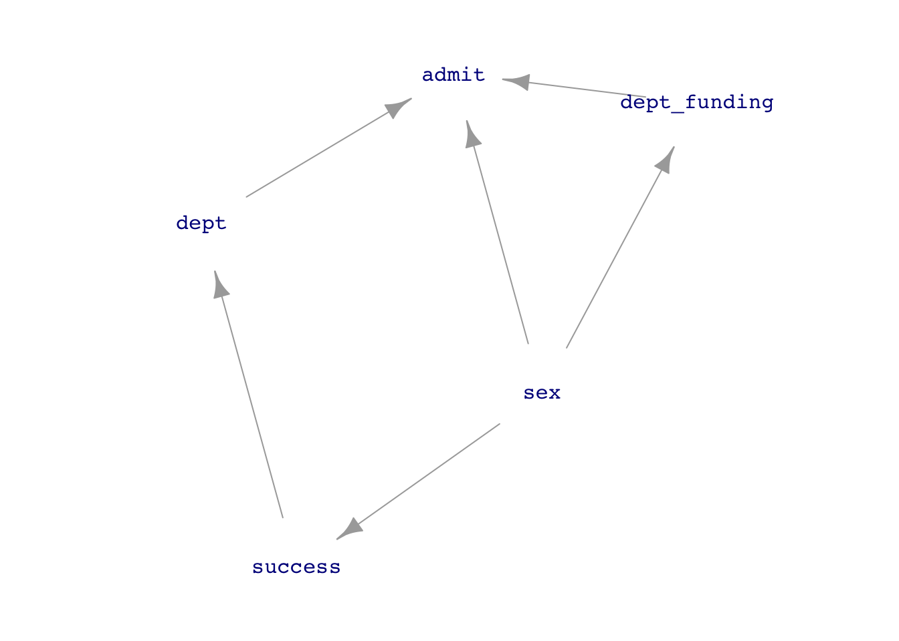

Instructor Teaching Notes for Lesson 31
Math300Z
On Sunday afternoon I was reading the AARP monthly newsletter. This short item drew my attention:
This hat startling relevance because—at the time I was reading—I had no chest pain at all. Should I have been concerned? What is the probability I am having a heart attack if not 31%.
Heuristics: - 31% per what interval of time? If I’m not having chest pain next week, do I still have a 31% probability of having a heart attack at that time? A probability quantifies a specific outcome from a specific event. Is there any guidance about what the specific event is? My whole future life? This month? Today? - … others from students.
Review of Lesson 30
Child of response as covariate
dag_four <- dag_make(
A ~ exo(),
B ~ A + exo(),
C ~ 2.5*B + exo()
)
Samp <- sample(dag_four, size=1000)
lm(B ~ A, data=Samp) |> conf_interval()# A tibble: 2 × 4
term .lwr .coef .upr
<chr> <dbl> <dbl> <dbl>
1 (Intercept) -0.0856 -0.0211 0.0433
2 A 0.847 0.912 0.977 lm(B ~ A + C, data=Samp) |> conf_interval()# A tibble: 3 × 4
term .lwr .coef .upr
<chr> <dbl> <dbl> <dbl>
1 (Intercept) -0.0290 -0.00586 0.0173
2 A 0.0837 0.114 0.144
3 C 0.338 0.346 0.355 Parent of explanatory as covariate
dag_six <- dag_make(
C ~ exo(),
A ~ C + exo(),
B ~ 2.5* A + exo()
)
Samp <- sample(dag_six, size=1000)
lm(B ~ A, data=Samp) |> conf_interval()# A tibble: 2 × 4
term .lwr .coef .upr
<chr> <dbl> <dbl> <dbl>
1 (Intercept) -0.0576 0.00339 0.0644
2 A 2.48 2.52 2.56 lm(B ~ A + C, data=Samp) |> conf_interval()# A tibble: 3 × 4
term .lwr .coef .upr
<chr> <dbl> <dbl> <dbl>
1 (Intercept) -0.0573 0.00379 0.0648
2 A 2.45 2.51 2.57
3 C -0.0691 0.0198 0.109 Child of explanatory as covariate
dag_five <- dag_make(
A ~ exo(),
C ~ A + exo(),
B ~ 2.5* A + exo()
)
Samp <- sample(dag_five, size=1000)
lm(B ~ A, data=Samp) |> conf_interval()# A tibble: 2 × 4
term .lwr .coef .upr
<chr> <dbl> <dbl> <dbl>
1 (Intercept) -0.0728 -0.00867 0.0554
2 A 2.45 2.51 2.58 lm(B ~ A + C, data=Samp) |> conf_interval()# A tibble: 3 × 4
term .lwr .coef .upr
<chr> <dbl> <dbl> <dbl>
1 (Intercept) -0.0728 -0.00859 0.0556
2 A 2.43 2.52 2.60
3 C -0.0695 -0.00400 0.0615**Collider
dag_three <- dag_make(
A ~ exo(),
B ~ 2.5* A + exo(),
C ~ A + 1.25*B + exo()
)
Samp <- sample(dag_three, size=1000)
lm(B ~ A, data=Samp) |> conf_interval()# A tibble: 2 × 4
term .lwr .coef .upr
<chr> <dbl> <dbl> <dbl>
1 (Intercept) -0.0391 0.0230 0.0851
2 A 2.38 2.44 2.50 lm(B ~ A + C, data=Samp) |> conf_interval()# A tibble: 3 × 4
term .lwr .coef .upr
<chr> <dbl> <dbl> <dbl>
1 (Intercept) -0.0343 0.00374 0.0418
2 A 0.387 0.488 0.589
3 C 0.461 0.484 0.508 The Berkeley graduate admissions data from 1973
mod1 <- model_train(zero_one(admit, one="admitted") ~ gender,
data=UCB_applicants)
model_plot(mod1, x=dept, color=gender, nlevels=10) +
ylab("Admitted")
mod2 <- model_train(zero_one(admit, one="admitted") ~ gender*dept,
data=UCB_applicants)
model_plot(mod2, x=dept, color=gender, nlevels=10, data_alpha=0.1) +
ylab("Admitted")
model_train(zero_one(admit, one="admitted") ~ gender,
data=UCB_applicants) |> conf_interval()Waiting for profiling to be done...# A tibble: 2 × 4
term .lwr .coef .upr
<chr> <dbl> <dbl> <dbl>
1 (Intercept) -0.931 -0.830 -0.732
2 gendermale 0.485 0.610 0.736model_train(zero_one(admit, one="admitted") ~ gender + dept,
data=UCB_applicants) |> conf_interval()Waiting for profiling to be done...# A tibble: 7 × 4
term .lwr .coef .upr
<chr> <dbl> <dbl> <dbl>
1 (Intercept) 0.488 0.682 0.877
2 gendermale -0.259 -0.0999 0.0582
3 deptB -0.258 -0.0434 0.172
4 deptC -1.47 -1.26 -1.05
5 deptD -1.50 -1.29 -1.09
6 deptE -1.99 -1.74 -1.49
7 deptF -3.65 -3.31 -2.98 Back to Berkeley
Should we adjust for department? Let’s go to a DAG.
UCB_dag1 <- dag_make(sex ~ exo(),
dept ~ sex,
admit ~ sex + dept)
dag_draw(UCB_dag1, vertex.label.cex=1)
If we think that the connection sex \(\longrightarrow\) department is just a matter of personal choice (as in the 1975 Science article), then we should block the back-door pathway.
But if we think that sex \(\longrightarrow\) department reflects systemic issues such as which departments are considered important and get funding, or which careers women think they can succeed in, then we do not want to block the backdoor pathway.
UCB_dag2 <- dag_make(sex ~ exo(),
success ~ sex,
dept_funding ~ sex,
dept ~ success,
admit ~ sex + dept + dept_funding)
dag_draw(UCB_dag2, vertex.label.cex=1)
Birthweight collider
Observations from the 1960s:
- Smoking is associated with lower birthweight
- Lower birthweight is associated with increased mortality
Question: Does smoking have a direct effect on mortality?
How do you look at the direct effect of smoking on mortality? Block the other pathway by using birth weight as a covariate.
When this was done, by looking only at low-birthweight babies, it was found that smoking reduces mortality.
Might there be something else going on? Is there another cause for low birthweight?
Links by chance
Our method for detecting a link between variable X and Y is to build the model Y ~ X, with perhaps some covariate(s), then example the coefficient on X. If the *confidence interval** includes zero, there is no link.
We can simulate what happens when there is no link, for example
no_link_dag <- dag_make(
X ~ exo(),
Y ~ exo()
)How do we know this DAG represents a system with no link?
A simulation:
Samp <- sample(no_link_dag, size=100)
lm(Y ~ X, data=Samp) |>
conf_interval() |>
filter(term=="X")# A tibble: 1 × 4
term .lwr .coef .upr
<chr> <dbl> <dbl> <dbl>
1 X -0.302 -0.0987 0.104Let’s see how often we get a confidence interval that excludes zero even though there is no link between X and Y in the mechanism generating the data.
one_trial <- function(n=100) {
sample(no_link_dag, size=n) |>
lm(Y ~ X, data=_) |>
conf_interval() |>
filter(term=="X") |>
mutate(excludes = .lwr > 0 | .upr < 0) |>
select(excludes)
}
one_trial()# A tibble: 1 × 1
excludes
<lgl>
1 FALSE Now run 1000 trials …
{do(1000) * one_trial(n=100)} |>
summarize(frac_mistakes = sum(excludes) / n()) frac_mistakes
1 0.047How will the fraction of mistakes change if we increase the sample size?
Other sources of spurious correlation
The Berkeley graduate admissions data from 1973
mod1 <- model_train(zero_one(admit, one="admitted") ~ gender,
data=UCB_applicants)
model_plot(mod1, x=dept, color=gender, nlevels=10) +
ylab("Admitted")
mod2 <- model_train(zero_one(admit, one="admitted") ~ gender*dept,
data=UCB_applicants)
model_plot(mod2, x=dept, color=gender, nlevels=10, data_alpha=0.1) +
ylab("Admitted")
model_train(zero_one(admit, one="admitted") ~ gender,
data=UCB_applicants) |> conf_interval()Waiting for profiling to be done...# A tibble: 2 × 4
term .lwr .coef .upr
<chr> <dbl> <dbl> <dbl>
1 (Intercept) -0.931 -0.830 -0.732
2 gendermale 0.485 0.610 0.736model_train(zero_one(admit, one="admitted") ~ gender + dept,
data=UCB_applicants) |> conf_interval()Waiting for profiling to be done...# A tibble: 7 × 4
term .lwr .coef .upr
<chr> <dbl> <dbl> <dbl>
1 (Intercept) 0.488 0.682 0.877
2 gendermale -0.259 -0.0999 0.0582
3 deptB -0.258 -0.0434 0.172
4 deptC -1.47 -1.26 -1.05
5 deptD -1.50 -1.29 -1.09
6 deptE -1.99 -1.74 -1.49
7 deptF -3.65 -3.31 -2.98 Back to Berkeley
Should we adjust for department? Let’s go to a DAG.
UCB_dag1 <- dag_make(sex ~ exo(),
dept ~ sex,
admit ~ sex + dept)
dag_draw(UCB_dag1, vertex.label.cex=1)
If we think that the connection sex \(\longrightarrow\) department is just a matter of personal choice (as in the 1975 Science article), then we should block the back-door pathway.
But if we think that sex \(\longrightarrow\) department reflects systemic issues such as which departments are considered important and get funding, or which careers women think they can succeed in, then we do not want to block the backdoor pathway.
UCB_dag2 <- dag_make(sex ~ exo(),
success ~ sex,
dept_funding ~ sex,
dept ~ success,
admit ~ sex + dept + dept_funding)
dag_draw(UCB_dag2, vertex.label.cex=1)
Birthweight collider
Observations from the 1960s:
- Smoking is associated with lower birthweight
- Lower birthweight is associated with increased mortality
Question: Does smoking have a direct effect on mortality?
How do you look at the direct effect of smoking on mortality? Block the other pathway by using birth weight as a covariate.
When this was done, by looking only at low-birthweight babies, it was found that smoking reduces mortality.
Might there be something else going on? Is there another cause for low birthweight?